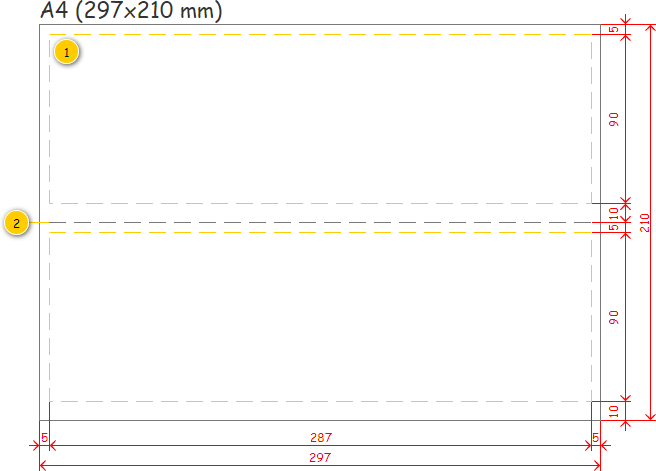

Stručný popis
Tisková sestava Potvrzení o výkonu objednané služby (POVOS) slouží k potvrzení realizace služby objednavatelem a zadání podrobných informací o samotné realizaci Denního výkonu. Je generována dle na vstupu předaných dat. Výstupem je pak oboustranný dokument formátu A4.
Vstupní data pro tiskovou sestavu jsou následující:
- Přiřazení zaměstnanci: Neprázdná kolekce dvojic Denní výkon-Zaměstnanec, kdy má dvojice následující význam:
- Denní výkon: Denní výkon, pro který má být vytištěna tisková sestava.
- Zaměstnanec: Zaměstnanec, který byl přiřazen na odpovídající Denní výkon (může být NULL).
Výstupní data jsou následující:Vytvoření potvrzení o výkonu objednané služby
- PDF soubor s vygenerovanou tiskovou sestavu.
Do této doby byl v provozu tištěn prázdný dokument pomocí šablony v xlsx dokumentu: .
Poznámka: Tisková sestava je aktuálně určena pouze pro některé typy dopravy, jedná se o Hákový nakladač, Ramenový nakladač a Valník. Jedná se o zákaznickou tiskovou sestavu: MPG SK.
Zpracování vstupních dat
Nejprve je nutné vstupní data rozklíčovat, a určit tak, jakým způsobem bude sestava vytištěna. Může totiž dojít k agregaci více Objednaných služeb do jednoho Potvrzení o výkonu objednané služby.
Struktura dat
V rámci algoritmu pro vyhodnocení vstupních dat dojde k získání informací potřebných pro generování Potvrzení o výkonu objednané služby. Struktura dat je uvedena v tabulkách – nejprve informace společné pro celý Denní výkon, následně data pro jednotlivá Potvrzení o výkonu objednané služby.
Společná data
Nejprve je tedy uvedena společná struktura pro celý Denní výkon.
| Položka | Typ položky | Poznámka |
|---|---|---|
| Společnost | Entita Provozovna. | Jedná se Provozovnu nejvyšší úrovně, pod kterou spadá Provozovna, v rámci které je Denní výkon realizován. |
| Provozovna | Entita Provozovna. | Provozovna, v rámci které je Denní výkon realizován. |
| Vozidlo | Entita Vozidlo. | Vozidlo přiřazené na Denní výkon. Nemusí být přiřazeno. |
| Přívěsy | Entita Přívěs (kolekce). | Přívěsy použité v rámci Denního výkonu. Nemusí být přiřazeny. |
| Datum realizace | Datový typ Datum. | Datum realizace Denního výkonu. |
| Řidič | Entita Zaměstnanec. | Řidič přiřazený na Denní výkon. Nemusí být přiřazen. |
| Počet celkem | Datový typ Celé číslo. | Počet Potvrzení o výkonu objednané služby v rámci Denního výkonu celkem. |
| Potvrzení o výkonu objednané služby | Viz dále, Potvrzení o výkonu objednané služby (kolekce). | Jednotlivá Potvrzení o výkonu objednané služby tištěná v rámci Denního výkonu. Nemusí být obsažena žádná položka. |
Potvrzení o výkonu objednané služby
Dále je tedy uvedena struktura pro jednotlivá Potvrzení o výkonu objednané služby.
| Položka | Typ položky | Poznámka |
|---|---|---|
| Pořadí | Datový typ Celé číslo. | Pořadí Potvrzení o výkonu objednané služby v rámci Denního výkonu. |
| Zákazník | Entita Zákazník. | Zákazník, který je v rámci Potvrzení o výkonu objednané služby obsluhován. |
| Adresa místa realizace | Entita Adresa. | Adresa navštíveného Místo realizace v rámci Potvrzení o výkonu objednané služby. |
| Kontakty k místu realizace | Datový typ Řetězec (kolekce). | Kontakty k Místu realizace zadané při zakládání Objednávky. Nemusí být obsažena žádná položka. |
| Položky objednaná služby | Viz dále, Položka objednaná služba (kolekce). | Objednané služby, které jsou v rámci Potvrzení o výkonu objednané služby realizovány. |
| Položky likvidační místo | Viz dále, Položka likvidační místo (kolekce). | Likvidační místa, která jsou v rámci Potvrzení o výkonu objednané služby navštívena. Nemusí být obsažena žádná položka. |
Položka objednaná služba
V rámci jednoho Potvrzení o výkonu objednané služby může být realizováno více Objednaných služeb zároveň.
| Položka | Typ položky | Poznámka |
|---|---|---|
| Typ úkonu | Výčtový typ Typ úkonu. | Typ úkonu, který je v rámci Objednané služby prováděn. |
| Počet objednaných nádob | Datový typ Celé číslo. | Počet stejných Objednaných nádob. |
| Typ nádoby | Entita Typ nádoby. | Typ Objednané nádoby. Nemusí být přiřazena. |
| Vlastní nádoba | Datový typ Boolean. | Informace, zda je Objednaná nádoba majetkem dodavatele či objednavatele. |
| Druhy odpadu | Entita Druh odpadu (kolekce). | Druhy odpadu umístěné v rámci Objednané nádoby. Nemusí být přiřazeny (např. při manipulaci kontejneru). Nemusí být obsažena žádná položka. |
Položka likvidační místo
V rámci jednoho Potvrzení o výkonu objednané služby může být navštíveno více Likvidačních míst zároveň.
| Položka | Typ položky | Poznámka |
|---|---|---|
| Je paušál | Datový typ Boolean. | Informace, zda je vývoz na Likvidační místo dán paušálem. |
| Druhy odpadu | Entita Druh odpadu (kolekce). | Druhy odpadu vyvezené na Likvidační místo. |
| Likvidační místo | Entita Likvidační místo. | Likvidační místo, na které jsou prováděny vývozy pro dané Druhy odpadu. |
Získání dat
Struktura dat potřebná pro vytvoření tiskové sestavy je definována, můžeme ji tedy naplnit daty. Na vstupu tiskové sestavy je získána neprázdná kolekce tvořená dvojicemi Denní výkon-Zaměstnanec.
Poznámka: V rámci algoritmů jsou použity názvy jednotlivých položek uvedených v části Struktura dat, sloupec Položka.
- Systém připraví prázdný PDF soubor.
- Pro všechny dvojice Denní výkon-Zaměstnanec získané na vstupu:
- Systém připraví data pro vygenerování tiskové sestavy pro právě zkoumanou dvojici Denní výkon-Zaměstnanec – viz Získání dat pro denní výkon.
- Systém vygeneruje stránky tiskové sestavy dle připravených dat – viz Uživatelské rozhraní (poznámka: pokud v rámci připravené struktury dat není k dispozici žádné Potvrzení o výkonu objednané služby (viz Společná data), je vložena jedna stránka s jedním Potvrzením o výkonu objednané služby, kde jsou vyplněny pouze základní údaje získané ze Společných dat, která jsou dostupná pro každý Denní výkon).
- Systém vloží stránky s vygenerovanou tiskovou sestavu do připraveného PDF dokumentu, a to na její konec.
- Systém předá na výstup vygenerovaný PDF soubor.
Získání dat pro denní výkon
Každý Denní výkon je pak vyhodnocován samostatně – v tuto chvíli tedy máme k dispozici následující informace:
- Denní výkon, který je právě zkoumán.
- Zaměstnanec, který je na Denní výkon přiřazen. Nejedná se o povinný údaj.
Samotné vyhodnocení pak probíhá následovně:
- Systém připraví prázdnou strukturu pro společné informace o Denním výkonu – viz Společná data.
- Systém přiřadí hodnoty do jednotlivých položek vytvořené struktury:
- Společnost: atribut Nadřazená provozovna entity Provozovna – atribut Provozovna entity Denní výkon.
- Uvedené získání hodnoty probíhá do doby, kdy je nalezena taková Provozovna, která v rámci atributu Úroveň nabývá hodnoty 1 (poznámka: Provozovny představují stromovou strukturu, hledáme pak takovou Provozovnu, která se vyskytuje na nejvyšší úrovni mimo nultou).
- Pokud by nastala situace, kdy není možné nalézt Provozovnu splňující uvedenou podmínku, není hodnota nastavena vůbec.
- Pokud by nastala situace, kdy již první Provozovna (atribut Provozovna entity Denní výkon) nabývá v rámci atributu Úroveň hodnoty 1, je v rámci hodnoty nastavena přímo tato Provozovna (již se jedná o Provozovnu nejvyšší úrovně).
- Pokud by nastala situace, kdy první Provozovna (atribut Provozovna entity Objednávky) nabývá v rámci atributu Úroveň hodnoty 0, není hodnota nastavena vůbec.
- Provozovna: atribut Provozovna entity Denní výkon.
- Vozidlo: atribut Vozidlo entity Denní výkon (může být NULL).
- Přívěsy:
- Pokud je hodnota atributu Použití přívěsu entity Denní výkon rovna TRUE: atribut Použité přívěsy entity Denní výkon.
- Jinak: NULL.
- Datum realizace: atribut Datum realizace entity Denní výkon.
- Řidič: Zaměstnanec, který je na Denní výkon přiřazen (získán na vstupu, může být NULL).
- Počet celkem: 0 (nastavení výchozí hodnoty).
- Potvrzení o výkonu objednané služby: systém připraví prázdnou kolekci pro strukturu s jednotlivými Potvrzeními o výkonu objednané služby (nastavení výchozího stavu).
- Společnost: atribut Nadřazená provozovna entity Provozovna – atribut Provozovna entity Denní výkon.
- Pokud není v rámci Denního výkonu obsažena žádná Položka denního výkonu (atribut Položky denního výkonu) splňující všechny uvedené podmínky zároveň – konec toku událostí:
- Atribut Typ položky entity Položka denního výkonu nabývá hodnoty Objednaná služba.
- Systém připraví prázdnou kolekci pro Objednané služby.
- Pro všechny obsažené Položky denního výkonu (atribut Položky denního výkonu entity Denní výkon) typu Objednaná služba (atribut Typ položky):
- Pokud zatím není Objednaná služba (atribut Objednaná služba entity Položka denního výkonu, která je právě zkoumána) obsažena v pomocné kolekci (není splněna ani jedna z dále uvedených podmínek), je do kolekce vložena:
- Je k dispozici hodnota atributu Následující objednaná služba, tato Objednaná služba je zároveň obsažena v pomocné kolekci (zkoumáno do doby, kdy je hodnota uvedeného atributu rovna NULL – z důvodu násobného dělení Objednaných služeb).
- Je k dispozici hodnota atributu Předchozí objednaná služba, tato Objednaná služba je zároveň obsažena v pomocné kolekci (zkoumáno do doby, kdy je hodnota uvedeného atributu rovna NULL – z důvodu násobného dělení Objednaných služeb).
- Pokud zatím není Objednaná služba (atribut Objednaná služba entity Položka denního výkonu, která je právě zkoumána) obsažena v pomocné kolekci (není splněna ani jedna z dále uvedených podmínek), je do kolekce vložena:
- Pro všechny obsažené Objednané služby v pomocné kolekci:
- Systém připraví data pro vygenerování tiskové sestavy pro právě zkoumanou Objednanou službu – viz Získání dat pro objednanou službu.
Poznámka: Pokud je Objednaná služba služba nějakým způsobem rozdělena, je při tisku sestavy uvažována pouze jednou. To znamená, že pokud nalezneme více částí jedné Objednané služby v rámci stejného Denního výkonu, pracujeme s touto Objednanou službou jako celkem (jako by nebyla rozdělena). To má vliv na zobrazení celkového počtu Objednaných služeb v rámci Denního výkonu, na zobrazená Likvidační místa a podobně.
Získání dat pro objednanou službu
V každém Denním výkonu jsou postupně vyhodnocovány jednotlivé Položky denního výkonu typu Objednaná služba. Na základě toho jsou vytvořena jednotlivá Potvrzení o výkonu objednané služby, která mohou obsahovat i více než jednu Položku denního výkonu, respektive Objednanou službu. V tuto chvíli tedy máme navíc k dispozici následující informace:
- Objednaná služba, která je předána na vstupu.
Samotné vyhodnocení pak probíhá následovně:
- Pokud existuje Potvrzení o výkonu objednané služby, do kterého je možné vložit právě zkoumanou Objednanou službu – viz Sloučení potvrzení o výkonu objednané služby:
- Systém přidá právě zkoumanou Objednanou službu do nalezeného Potvrzení o výkonu objednané služby – viz Doplnění potvrzení o výkonu objednané služby.
- Jinak:
- Systém vytvoří nové Potvrzení o výkonu objednané služby pro právě zkoumanou Objednanou službu – viz Vytvoření potvrzení o výkonu objednané služby.
- Systém vloží vytvořené Potvrzení o výkonu objednané služby do odpovídající kolekce (Potvrzení o výkonu objednané služby, viz Společná data).
- Systém aktualizuje celkový počet Potvrzení o výkonu objednané služby v rámci Denního výkonu: Počet celkem++ (Počet celkem, viz Společná data).
Sloučení potvrzení o výkonu objednané služby
Pokud se v rámci Denního výkonu vyskytují Objednané služby, které mají společné parametry, mohou být sloučeny do jednoho Potvrzení o výkonu objednané služby. Množství Objednaných služeb v jednom Potvrzení o výkonu objednané služby je pak dáno strukturou dokumentu.
Samotné vyhodnocení pak probíhá následovně:
Systém nejprve nalezne všechna Potvrzení o výkonu objednané služby pro daného Zákazníka a dané Místo realizace v rámci zkoumaného Denního výkonu. Pokud není žádné takové Potvrzení o výkonu objednané služby nalezeno, víme, že sloučení není možné. Systém tedy nalezne pro právě zkoumaný Denní výkon (viz Společná data) všechna Potvrzení o výkonu objednané služby, která splňují všechny dále uvedené podmínky zároveň:
- Položka Zákazník odpovídá hodnotě atributu Objednavatel entity Objednávka – atribut Objednávka entity Položka objednávky – atribut Položka objednávky entity Objednaná nádoba – atribut Objednaná nádoba entity Objednaný úkon – atribut Objednaný úkon entity Objednaná služba.
- Položka Adresa místa realizace odpovídá Adrese pro Místo realizace získané z Objednané služby – hodnota získaná v rámci výpočtu, viz Získání adresy místa realizace (adresy vyhodnocovány dle Porovnání adresy).
Pokud nebylo nalezeno žádné Potvrzení o výkonu objednané služby, je proces slučování předčasně ukončen. V opačném případě systém pokračuje ve vyhodnocení obsažených kontaktů k Místu realizace pro nalezená Potvrzení o výkonu objednané služby v rámci předešlého kroku. Hledáme pak taková Potvrzení o výkonu objednané služby, která umožňují sloučení kontaktu k Místu realizace nebo jeho přidání. Systém tedy nalezne taková Potvrzení o výkonu objednané služby, která splňují alespoň jednu z uvedených podmínek:
- Potvrzení o výkonu objednané služby obsahuje kontakt k Místu realizace, který splňuje všechny dále uvedené podmínky zároveň:
- Položka Kontakty k místu realizace obsahuje prvek s hodnotou odpovídající hodnotě atributu Kontakt v místě realizace entity Položka objednávky – atribut Položka objednávky entity Objednaná nádoba – atribut Objednaná nádoba entity Objednaný úkon – atribut Objednaný úkon entity Objednaná služba.
- Potvrzení o výkonu objednané služby obsahuje méně kontaktů k Místu realizace než maxLinesCountPovos (viz ).
Pokud nebylo nalezeno žádné Potvrzení o výkonu objednané služby, je proces slučování předčasně ukončen. V opačném případě systém pokračuje ve vyhodnocení obsažených Položek objednaná služba pro nalezená Potvrzení o výkonu objednané služby v rámci předešlého kroku. Hledáme pak taková Potvrzení o výkonu objednané služby, která umožňují sloučení Položky objednaná služba nebo její přidání. Systém tedy nalezne taková Potvrzení o výkonu objednané služby, která splňují alespoň jednu z uvedených podmínek:
- Potvrzení o výkonu objednané služby obsahuje alespoň jednu Položku objednaná služba, která splňuje všechny dále uvedené podmínky zároveň – informace získána v rámci výpočtu, viz Porovnání položky objednaná služba.
- Potvrzení o výkonu objednané služby obsahuje méně Položek objednaná služba než maxServicesCountPovos (viz ).
Pokud není nalezeno žádné Potvrzení o výkonu objednané služby, je proces slučování předčasně ukončen. V opačném případě systém postupně prochází všechna nalezená Potvrzení o výkonu objednané služby a hledá takové, které umožňuje sloučení. Hledání probíhá postupně v pořadí, v jakém byla jednotlivá Potvrzení o výkonu objednané služby nalezena. Při nalezení prvního kandidáta, který splňuje všechny dále uvedené podmínky, dojde ke sloučení. Ostatní Potvrzení o výkonu objednané služby pak nejsou dále zkoumána, dojde ke sloučení s prvním nalezeným. Systém tedy nalezne první Potvrzení o výkonu objednané služby, které vyhovuje dále uvedenému postupu.
Nyní jsou tedy vyhodnoceny Položky likvidační místo. Hledáme pak taková Potvrzení o výkonu objednané služby, která umožňuje sloučení Položek likvidační místo nebo jejich přidání. V rámci Objednané služby může být totiž přidána více než jedna Položka likvidační místo. Systém tedy vyhodnotí, zda je splněna alespoň jedna z uvedených podmínek pro právě zkoumané Potvrzení o výkonu objednané služby, viz tabulka.
| Podmínka | Dílčí podmínky |
|---|---|
Potvrzení o výkonu objednané služby obsahuje všechny potřebné Položky likvidační místo (není potřeba žádné vytvářet). | Musí být splněny všechny podmínky zároveň:
|
Potvrzení o výkonu objednané služby obsahuje volné pozice pro všechny potřebné Položky likvidační místo (část může být obsažena, část je potřeba vytvořit). | Musí být splněny všechny podmínky zároveň:
|
Pokud není nalezeno žádné Potvrzení o výkonu objednané služby, je proces slučování předčasně ukončen. V opačném případě systém vrátí nalezené Potvrzení o výkonu objednané služby – jedná se o Potvrzení o výkonu objednané služby, s kterým bude sloučena zkoumaná Objednaná služba.
Vytvoření potvrzení o výkonu objednané služby
Pokud není možné Objednanou službu přiřadit k již existujícímu Potvrzení o výkonu objednané služby, musíme vytvořit nové. V tuto chvíli tedy máme k dispozici následující informace:
- Objednaná služba, pro kterou má být přidáno Potvrzení o výkonu objednané služby.
Samotné vytvoření pak probíhá následovně:
- Systém připraví prázdnou strukturu pro Potvrzení o výkonu objednané služby a přiřadí hodnoty do jednotlivých položek vytvořené struktury:
- Pořadí: položka Počet celkem + 1 (viz Společná data).
- Zákazník: atribut Objednavatel entity Objednávka – atribut Objednávka entity Položka objednávky – atribut Položka objednávky entity Objednaná nádoba – atribut Objednaná nádoba entity Objednaný úkon – atribut Objednaný úkon entity Objednaná služba.
- Místo realizace: hodnota získaná v rámci výpočtu z právě zkoumané Objednané služby, viz Získání adresy místa realizace.
- Poznámka: Takové Typy úkonu, pro které není k dispozici Místo realizace, nejsou u tohoto zákazníka používány. Uvedenou situaci zde tedy neřešíme.
- Pokud je k dispozici hodnota atributu Kontakt v místě realizace entity Položka objednávky – atribut Položka objednávky entity Objednaná nádoba – atribut Objednaná nádoba entity Objednaný úkon – atribut Objednaný úkon entity Objednaná služba.
- Systém vloží tuto hodnotu do položky Kontakty k místu realizace.
- Položky objednaná služby: systém připraví prázdnou kolekci pro strukturu s jednotlivými Položkami objednaná služba (nastavení výchozího stavu).
- Položky likvidační místo: systém připraví prázdnou kolekci pro strukturu s jednotlivými Položkami likvidační místo (nastavení výchozího stavu).
- Systém vytvoří a vloží Položku objednaná služba do odpovídající kolekce (Položky objednaná služba, viz Potvrzení o výkonu objednané služby) pro právě zkoumanou Objednanou službu – získána v rámci výpočtu, viz Vytvoření položky objednaná služba.
- Pro všechny Lokace objednané služby (atribut Lokace objednané služby entity Objednaná služba) typu Likvidační místo (viz Získání lokací objednané služby typu likvidační místo):
- Pokud již je vložena Položka likvidační místo odpovídající právě zkoumané Lokaci objednané služby – informace o shodě získána v rámci výpočtu, viz Porovnání položky likvidační místo:
- Skok na krok 3.
- Jinak:
- Systém vytvoří a vloží Položku likvidační místo do odpovídající kolekce (Položky likvidační místo, viz Potvrzení o výkonu objednané služby) pro právě zkoumanou Lokaci objednané služby – získána v rámci výpočtu, viz Vytvoření položky likvidační místo.
- Pokud již je vložena Položka likvidační místo odpovídající právě zkoumané Lokaci objednané služby – informace o shodě získána v rámci výpočtu, viz Porovnání položky likvidační místo:
Poznámka: Pokud je v rámci kroku 3 (vložení Položek likvidační místo) překročen maximální počet Položek likvidační místo, nejsou zbývající Položky likvidační místo viditelné. Jedná se o extrémní případy, kdy by v rámci jedné objednané služby bylo obsaženo velké množství Likvidačních míst. Při doplnění existujícího Potvrzení o výkonu objednané služby k tomu dojít nemůže.
Doplnění potvrzení o výkonu objednané služby
Pokud je možné Objednanou službu přiřadit k již existujícímu Potvrzení o výkonu objednané služby, učiníme tak. V tuto chvíli tedy máme k dispozici následující informace:
- Potvrzení o výkonu objednané služby, se kterým bude Objednaná služba sloučena.
- Objednaná služba, která má být sloučena s Potvrzením o výkonu objednané služby.
Lišit se pak mohou jen některé z položek Potvrzení o výkonu objednané služby, ty jsou uvedeny v tabulce. Sloupec Položka pak představuje položku v rámci Potvrzení o výkonu objednané služby.
| Položka | Podmínka | Hodnota |
|---|---|---|
| Kontakty k místu realizace | Pokud položka Kontakty k místu realizace neobsahuje prvek s uvedenou hodnotou:
Jinak:
| Atributu Kontakt v místě realizace entity Položka objednávky – atribut Položka objednávky entity Objednaná nádoba – atribut Objednaná nádoba entity Objednaný úkon – atribut Objednaný úkon entity Objednaná služba, která má být sloučena s Potvrzením o výkonu objednané služby. |
| Položky objednaná služby | Pokud již je vložena Položka objednaná služba odpovídající právě zkoumané Objednané službě – informace o shodě získána v rámci výpočtu, viz Porovnání položky objednaná služba:
Jinak:
| Objednaná služba, která má být sloučena s Potvrzením o výkonu objednané služby. |
| Položky likvidační místo | Pro všechny Lokace objednané služby (atribut Lokace objednané služby entity Objednaná služba) typu Likvidační místo (viz Získání lokací objednané služby typu likvidační místo):
| Objednaná služba, která má být sloučena s Potvrzením o výkonu objednané služby. |
Poznámka: Samotnému sloučení předchází algoritmus pro kontrolu, zda je sloučení vůbec možné. Pouze v takovém případě je volán uvedený algoritmus.
Algoritmy
Některé algoritmy se v rámci uvedeného chování opakují, proto jsou uvedeny společně na jednom místě a je na ně odkazováno.
Získání adresy místa realizace
Při tvorbě tiskové sestavy je potřeba nalézt Adresu odpovídajícího Místa realizace. Jedná se pak o takové Místo realizace, které bude obslouženo jako první. Na vstupu algoritmu je získána Objednaná služba, na výstup je předána nalezená Adresa.
- Systém nalezne všechny Lokace objednané služby (atribut Lokace objednané služby entity Objednaná služba, která je získána na vstupu) typu Místo realizace (atribut Typ lokace).
- Pokud je odpovídající Objednaná služba rozdělena, systém prochází Lokace objednaných služeb i v rámci dalších částí Objednané služby:
- Pokud je k dispozici hodnota atributu Předchozí objednaná služba, systém pracuje i s odkazovanou Objednanou službou (zkoumáno do doby, kdy je hodnota uvedeného atributu rovna NULL – z důvodu násobného dělení Objednaných služeb, průchod směrem vlevo).
- Pokud je k dispozici hodnota atributu Následující objednaná služba, systém pracuje i s odkazovanou Objednanou službou (zkoumáno do doby, kdy je hodnota uvedeného atributu rovna NULL – z důvodu násobného dělení Objednaných služeb, průchod směrem vpravo).
- Pokud je odpovídající Objednaná služba rozdělena, systém prochází Lokace objednaných služeb i v rámci dalších částí Objednané služby:
- Systém nalezne v získané kolekci (viz krok 1) požadovanou Lokaci objednané služby – vyhodnocení probíhá dle odpovídajícího Typu úkonu (atribut Typ úkonu entity Objednaný úkon – atribut Objednaný úkon entity Objednaná služba):
Přistavení, Vývoz, Výměna, Odvoz, Sběr, Rozvoz, Manipulace: získána taková Lokaci objednané služby, u které je hodnota atributu Pořadí nejnižší.
Přeprava: získána taková Lokaci objednané služby, u které je hodnota atributu Pořadí nejvyšší (jako cíl je použito místo realizace zadané v rámci formuláře objednávky).
Vývoz mezi LM: není podporováno.
- Systém vybere z nalezených Lokací objednané služby takovou, u které je hodnota atributu Pořadí nejnižší.
- Pokud je odpovídající Objednaná služba rozdělena, hledá Lokaci objednané služby postupně v jednotlivých částech Objednané služby (v pořadí zleva doprava, viz krok 1).
- Systém předá na výstup Adresu nalezené Lokace objednané služby (atribut Adresa entity Lokace objednané služby).
Poznámka: Pokud je Objednaná služba například rozdělena, může dojít k situaci, kdy není obsažena ani jedna Lokace objednané služby typu Místo realizace. V rámci této tiskové sestavy však vyhodnocujeme Objednané služby jako celek, bez ohledu na to, zda jsou rozděleny, došlo k jejich částečnému přeplánování, nebo jsou jinak upraveny. Dále pak není brána v potaz ani nastavená hodnota v rámci atributu Provést.
Získání lokací objednané služby typu likvidační místo
Při tvorbě tiskové sestavy je potřeba nalézt odpovídající Lokace objednané služby typu Likvidační místo (atribut Typ lokace). Na vstupu algoritmu je získána Objednaná služba, na výstup je předána kolekce nalezených Lokací objednané služby typu Likvidační místo (typ Výchozí likvidační místo není podporován, u tohoto zákazníka není používán).
- Systém nalezne všechny Lokace objednané služby (atribut Lokace objednané služby entity Objednaná služba, která je získána na vstupu) typu Likvidační místo (atribut Typ lokace).
- Pokud je odpovídající Objednaná služba rozdělena, systém prochází Lokace objednané služby i v rámci dalších částí Objednané služby:
- Pokud je k dispozici hodnota atributu Předchozí objednaná služba, systém pracuje i s odkazovanou Objednanou službou (zkoumáno do doby, kdy je hodnota uvedeného atributu rovna NULL – z důvodu násobného dělení Objednaných služeb, průchod směrem vlevo).
- Pokud je k dispozici hodnota atributu Následující objednaná služba, systém pracuje i s odkazovanou Objednanou službou (zkoumáno do doby, kdy je hodnota uvedeného atributu rovna NULL – z důvodu násobného dělení Objednaných služeb, průchod směrem vpravo).
- Pokud je odpovídající Objednaná služba rozdělena, systém prochází Lokace objednané služby i v rámci dalších částí Objednané služby:
- Systém předá na výstupu kolekci nalezených Lokací objednané služby.
Poznámka: Pokud je Objednaná služba například rozdělena, může dojít k situaci, kdy není obsažena ani jedna Lokace objednané služby typu Likvidační místo. V rámci této tiskové sestavy však vyhodnocujeme Objednané služby jako celek, bez ohledu na to, zda jsou rozděleny, došlo k jejich částečnému přeplánování, nebo jsou jinak upraveny. Dále pak není brána v potaz ani nastavená hodnota v rámci atributu Provést.
Počet nádob
Počet započítaných Objednaných nádob se liší především dle Typu dopravy. V případě hákových a ramenových nakladačů je pro každou požadovanou Objednanou nádobu vytvořena samostatná Objednaná služba. Pro valník a lisovací vozidlo je pak počet nádob pouze orientační hodnotou. Od toho se tedy odvíjí i výpočet pro získání hodnoty. Na vstupu algoritmu je pak získána zkoumaná Objednaná služba, na výstupu je předáno konkrétní číslo s počtem Objednaných nádob.
Počet objednaných nádob: liší se dle Typu dopravy (atribut Typ dopravy entity Typ nádoby – atribut Typ nádoby entity Objednaná nádoba – atribut Objednaná nádoba entity Objednaný úkon – atribut Objednaný úkon entity Objednaná služba):
- Hákový nakladač, Ramenový nakladač: 1.
- Lisovací vozidlo, Valník: atribut Počet nádob entity Objednaná nádoba – atribut Objednaná nádoba entity Objednaný úkon – atribut Objednaný úkon entity Objednaná služba.
Porovnání položky objednaná služba
V rámci vyhodnocení možnosti sloučit více Objednaných služeb do jednoho Potvrzení o výkonu objednané služby je nutné porovnat Položku objednaná služba spolu s právě zkoumanou Objednanou službou. Na vstupu algoritmu je pak získána porovnávaná Položka objednaná služba a zkoumaná Objednaná služba na výstupu je předána informace, zda je možné jejich sloučení.
Pokud jsou splněny všechny dále uvedené podmínky zároveň (Položka objednaná služba odpovídá Objednané službě): TRUE.
- Položka Typ úkonu odpovídá hodnotě atributu Typ úkonu entity Objednaný úkon – atribut Objednaný úkon entity Objednaná služba.
- Položka Typ nádoby odpovídá hodnotě atributu Typ nádoby entity Objednaná nádoba – atribut Objednaná nádoba entity Objednaný úkon – atribut Objednaný úkon entity Objednaná služba.
- Položka Vlastní nádoba odpovídá hodnotě atributu Vlastní nádoba entity Objednaná nádoba – atribut Objednaná nádoba entity Objednaný úkon – atribut Objednaný úkon entity Objednaná služba.
- Položka Druhy odpadu obsahuje všechny Druhy odpadu, které jsou obsaženy v rámci Vývozů na likvidační místo právě zkoumané Objednané služby (atribut Druh odpadu entity Vývoz na likvidační místo – atribut Vývozy na likvidační místo entity Objednaná nádoba – atribut Objednaná nádoba entity Objednaný úkon – atribut Objednaný úkon entity Objednaná služba).
- Položka Druhy odpadu neobsahuje žádné Druhy odpadu, které nejsou obsaženy v rámci Vývozů na likvidační místo právě zkoumané Objednané služby (atribut Druh odpadu entity Vývoz na likvidační místo – atribut Vývozy na likvidační místo entity Objednaná nádoba – atribut Objednaná nádoba entity Objednaný úkon – atribut Objednaný úkon entity Objednaná služba).
Jinak: FALSE.
Porovnání položky likvidační místo
V rámci vyhodnocení možnosti sloučit více Objednaných služeb do jednoho Potvrzení o výkonu objednané služby je nutné porovnat Položku likvidační místo spolu s právě zkoumanou Lokací objednané služby typu Likvidační místo. Na vstupu algoritmu je pak získána porovnávaná Položku likvidační místo a zkoumaná Lokace objednané služby, na výstupu je předána informace, zda je možné jejich sloučení.
Pokud jsou splněny všechny dále uvedené podmínky zároveň (Položka likvidační místo odpovídá Lokaci objednané služby): TRUE.
- Položka Je paušál odpovídá hodnotě atributu Fakturace entity Lokace objednané služby.
- Položka Likvidační místo odpovídá hodnotě Likvidační místo entity Lokace objednané služby.
- Položka Druhy odpadu obsahuje všechny Druhy odpadu, které jsou obsaženy v rámci hodnoty atributu Druhy odpadu entity Lokace objednané služby.
- Položka Druhy odpadu neobsahuje žádné Druhy odpadu, které nejsou obsaženy v rámci hodnoty atributu Druhy odpadu entity Lokace objednané služby.
Jinak: FALSE.
Porovnání adresy
V rámci vyhodnocení možnosti sloučit více Objednaných služeb do jednoho Potvrzení o výkonu objednané služby je nutné porovnat i Adresy některých Lokací objednané služby. Na vstupu algoritmu jsou pak získány porovnávané Adresy, na výstupu je předána informace, zda je možné jejich sloučení.
Pokud je splněna alespoň jedna z dále uvedených podmínek (Adresy si odpovídají): TRUE.
- Jedná se o totožné instance – obě na vstupu získané Adresy mají stejný interní identifikátor.
- Hodnoty atributů na vstupu získaných Adres si odpovídají – jsou splněny všechny dále uvedené podmínky zároveň:
- Hodnoty atributu Ulice se rovnají.
- Hodnoty atributu Číslo popisné se rovnají.
- Hodnoty atributu Číslo orientační se rovnají.
- Hodnoty atributu Město se rovnají.
- Hodnoty atributu PSČ se rovnají.
- Hodnoty atributu Stát se rovnají.
Jinak: FALSE.
Vytvoření položky objednaná služba
V rámci přípravy dat pro tiskovou sestavu jsou vytvářeny jednotlivé Položky objednaná služba, které jsou následně plněny. Na vstupu algoritmu je pak předána Objednaná služba, výstupem je zmíněná Položka objednaná služba.
- Systém připraví prázdnou strukturu pro Položku objednaná služba.
- Systém přiřadí hodnoty do jednotlivých položek vytvořené struktury:
- Typ úkonu: atribut Typ úkonu entity Objednaný úkon – atribut Objednaný úkon entity Objednaná služba.
- Počet objednaných nádob: hodnota získaná v rámci výpočtu, viz Počet nádob.
- Typ nádoby: atribut Typ nádoby entity Objednaná nádoba – atribut Objednaná nádoba entity Objednaný úkon – atribut Objednaný úkon entity Objednaná služba.
- Vlastní nádoba: atribut Vlastní nádoba entity Objednaná nádoba – atribut Objednaná nádoba entity Objednaný úkon – atribut Objednaný úkon entity Objednaná služba.
- Druhy odpadu: systém načte Druhy odpadu vyskytující se v rámci Objednané služby – pro všechny Vývozy na likvidační místo (atribut Vývozy na likvidační místo entity Objednaná služba):
- Pokud zatím Druh odpadu v právě zkoumaném Vývozu na likvidační místo (atribut Druh odpadu) nebyl zanesen, systém ho vloží do kolekce (Druhy odpadu, viz Položka objednaná služba).
- Systém předá na výstup vytvořenou Položku objednaná služba.
Vytvoření položky likvidační místo
V rámci přípravy dat pro tiskovou sestavu jsou vytvářeny jednotlivé Položky likvidační místo, které jsou následně plněny. Na vstupu algoritmu je pak předána Lokace objednané služby typu Likvidační místo, výstupem je zmíněná Položka likvidační místo.
- Systém připraví prázdnou strukturu pro Položku likvidační místo.
- Systém přiřadí hodnoty do jednotlivých položek vytvořené struktury:
- Je paušál: atribut Fakturace entity Lokace objednané služby, která je právě zkoumána.
- Druhy odpadu: atribut Druhy odpadu entity Lokace objednané služby, která je právě zkoumána.
- Likvidační místo: atribut Likvidační místo entity Lokace objednané služby, která je právě zkoumána.
- Systém předá na výstup vytvořenou Položku likvidační místo.
Uživatelské rozhraní
Tisková sestava je generována dle na vstupu předaných dat. Výstupem je pak oboustranný dokument formátu A4.
Pokud není uvedeno jinak, je v rámci celého dokumentu použito písmo Calibri.
Popis tiskové sestavy je pak koncipován do různých skupiny:
- rozložení tiskové sestavy v rámci listu papíru,
- rozložení tiskové sestavy pro jedno potvrzení o výkonu objednané služby,
- rozložení polí, která jsou systéme předvyplněna.
Poznámka: V rámci popisu jsou uvedeny rozměry jednotlivých částí dokumentu, ty ale nemusí být přesně dodrženy. Cílem je co nejvíce napodobit již existující dokument.
Rozložení tiskové sestavy
Stránky, ze kterých je tvořena tisková sestava, jsou ve formátu A4 (297x210 mm). Obsahuje dvě pole pro Potvrzení o výkonu objednané služby a přerušovanou čáru naznačující polovinu stránky. Jedná se pak o oboustranný dokument – rozložení je tedy platné pro přední i zadní stranu, musí lícovat.
Poznámka: Vždy je tedy tištěn list s přední stranou, následně pak se zadní stranou Potvrzení o výkonu objednané služby, a to do doby, kdy jsou vytištěna všechna Potvrzení o výkonu objednané služby. Jednotlivá Potvrzení o výkonu objednané služby jsou tištěna dle pořadí v rámci Denního výkonu.
Rozměry jednotlivých částí a rozestupy mezi nimi jsou pak uvedeny na obrázku. Samotné kóty jsou pak uvedeny v milimetrech.
Drátový diagram

Přehled UI komponent
| Callout | Komponenta | Poznámka |
|---|---|---|
| 1 | Potvrzení o výkonu objednané služby | Obsahuje sestavu popsanou v rámci Rozložení potvrzení o výkonu objednané služby. |
| 2 | Rozdělení stránky | Je vykresleno přerušovanou čarou o tloušťce 0,25 mm. |
Rozložení potvrzení o výkonu objednané služby
Potvrzení o výkonu objednané služby je tvořeno tabulkou, která je dále popsána.
Rozložení
Potvrzení o výkonu objednané služby je umístěno dle dříve uvedeného rozložení, jeho rozměry pak činí 287x90 mm. Velikost jednotlivých částí je pak popsána dále.
Poznámka: Vzhledem k omezení knihovny generující PDF soubory nemusí některé rozměry přesně odpovídat uvedenému obrázku. Důvodem je určení minimálních rozměrů buňky, které se přizpůsobují dle velikosti písma obsažené hodnoty. Mělo by však být zachováno lícování jednotlivých prvků v rámci dokumentu.
Drátový diagram

Přehled UI komponent
| Callout | Komponenta |
|---|---|
| 1 | Přední strana |
| 2 | Zadní strana |
Tloušťka čar
Tisková sestava je vykreslena různou silou čáry, dále je tedy uvedeno schéma s popisem tloušťky čar.
Drátový diagram

Přehled UI komponent
| Callout | Komponenta | Tloušťka |
|---|---|---|
| 1 (žlutě) | Silná čára | 0,5 mm |
| 2 (červeně) | Tenká čára | 0,25 mm |
Rozložení pevně daných hodnot
Nadpisy polí a pevně dané hodnoty jsou dopředu známy, jejich soupis je uveden dále.
Drátový diagram

Rozložení UI komponent
| Callout | Hodnota | Zarovnání | Velikost písma | Řez písma |
|---|---|---|---|---|
| 1 | Potvrdenie o výkone objednanej služby |
| 16 pt | Tučné |
| 2 | Spoločnosť |
| 8 pt | – |
| 3 | – | – | – | – |
| 4 | Stredisko |
| 8 pt | – |
| 5 | Evidenčné číslo vozidla |
| 8 pt | – |
| 6 | Evidenčné číslo prívesu |
| 8 pt | – |
| 7 | Osádka vozidla |
| 8 pt | – |
| 8 | Objednaná služba |
| 8 pt | – |
| 9 | Dátum |
| 8 pt | – |
| 10 | Vychází z grafického manuálu – viz Logo společnosti. |
| – | – |
| 11 | Názov/meno zákazníka /Sídlo Poznámka: Opravdu mají být v rámci textu obsaženy 2 mezery za sebou, nejedná se o překlep. |
| 8 pt | – |
| 12 | Miesto a čas výkonu |
| 8 pt | – |
| 13 | Podpis/pečiatka zákazníka |
| 8 pt | – |
| 14 | Dispečing |
| 6 pt | – |
| 15 | Špecifikácia výkonu |
| 6 pt | – |
| 16 | Riadok |
| 6 pt | – |
| 17 | Faktúra |
| 6 pt | – |
| 18 | Druh odpadu |
| 6 pt | – |
| 19 | Vykládka |
| 6 pt | – |
| 20 | Poznámka |
| 6 pt | – |
| 21 | Pořadové číslo řádku: 1 až 5. |
| 6 pt | – |
| 22 | Osádka vozidla |
| 6 pt | – |
| 23 | Manipulácie (počet) |
| 6 pt | – |
| 24 | Ubehnuté km |
| 6 pt | – |
| 25 | pristavenie |
| 6 pt | – |
| 26 | vývoz/ výmena |
| 6 pt | – |
| 27 | odvoz |
| 6 pt | – |
| 28 | Náklad v tonách |
| 6 pt | – |
| 29 | Sólo |
| 6 pt | – |
| 30 | Príves |
| 6 pt | – |
| 31 | Celkom |
| 6 pt | – |
| 32 | Poznámka |
| 6 pt | – |
| 33 | Podpis dispečera |
| 6 pt | – |
| 34 | Rekapitulácia služby |
| 6 pt | – |
| 35 | Doba nasadenia vozidla |
| 6 pt | – |
| 36 | Odchod |
| 6 pt | – |
| 37 | Príchod |
| 6 pt | – |
| 38 | Celkom |
| 6 pt | – |
| 39 | Prestávka v práci |
| 6 pt | – |
| 40 | Denný výkon od 6 h do 9 h (30 min.) |
| 6 pt | – |
| 41 | od |
| 6 pt | – |
| 42 | do |
| 6 pt | – |
| 43 | Denný výkon nad 9 h (15 min.) |
| 6 pt | – |
| 44 | od |
| 6 pt | – |
| 45 | do |
| 6 pt | – |
| 46 | Čerpanie PHM (l) |
| 6 pt | – |
| 47 | Stav tachometra |
| 6 pt | – |
| 48 | pred odchodom |
| 6 pt | – |
| 49 | po príchode |
| 6 pt | – |
| 50 | Poznámka |
| 6 pt | – |
Rozložení systémem vkládaných hodnot
Hodnoty, které systém předvyplní v rámci tiskové sestavy, jsou získány ze vstupních dat pomocí dříve uvedeného algoritmu – viz Získání dat. Na jeho výstupu jsou předány potřebné informace pro vyplnění. Struktura těchto dat je dána a v rámci popisu je na ni odkazováno – viz Struktura dat, sloupec Položka.
Pokud se některá hodnota z důvodu své délky nevejde do přiřazené buňky v rámci sestavy, dojde k jejímu zalomení na další řádek. Může pak nastat i případ kdy se konkrétní hodnota do formuláře jednoduše nevejde:
- Dojde k opakovanému zalomení řádku a výška buňky nebude pro konkrétní text dostačující (může dojít k tzv. přetečení, text bude zobrazen i mimo odpovídající buňku).
- V rámci jedné Objednané služby je navštíveno více Likvidačních míst, pro které již není ve formuláři místo.
V těchto nebo jiných extrémních případech může dojít k zobrazení jen části požadovaných informací – z důvodu nízké pravděpodobnosti výskytu nejsou uvedené komplikace ošetřeny.
Drátový diagram

Přehled UI komponent
| Callout | Příklad hodnoty | Položka | Typ položky | Formát | Zarovnání | Velikost písma | Poznámka |
|---|---|---|---|---|---|---|---|
| 1 | 1/6 |
| Datový typ Celé číslo. |
| 16 pt | Pokud je hodnota položky Počet celkem rovna 0, není prvek zobrazen. | |
| 2 | Prevádzka Trenčín |
| Entita Provozovna. |
| 8 pt | – | |
| 3 | TN 985 DP |
| Entita Vozidlo. | Pokud není Vozidlo k dispozici:
|
| 24 pt | – |
| 4 | PD 877 YH |
| Entita Přívěs. | Pokud je obsažen více než jeden Přívěs:
Pokud není žádný Přívěs k dispozici:
|
| 16 pt | – |
| 5 | Alois Jirásek |
| Entita Zaměstnanec. | Pokud není Zaměstnanec k dispozici:
|
| 16 pt | – |
| 6 | Přistavení: 2x HNK 15 m2, otvorený – 01 03 08 |
| Typ úkonu – výčtový typ Typ úkonu. Počet objednaných nádob – datový typ Celé číslo. Typ nádoby – entita Typ nádoby. Vlastní nádoba – datový typ Boolean. Druhy odpadu – entita Druh odpadu. |
|
| 8 pt | Řádky jsou umístěny ve 2 sloupcích. Nejdříve je naplněn první řádek, následně druhý a tak dále. Pro každou dodanou položku je zobrazen samostatný řádek. Maximální počet položek je pak v rámci algoritmu omezen. Maximální počet položek v jednom sloupci pak činí polovinu celkového omezení (maxServicesCountPovos, viz ). |
| 7 | 12. 8. 2019 |
| Datový typ Datum. |
| 16 pt | – | |
| 8 | QUART spol. s.r.o. |
| Entita Zákazník. |
| 16 pt | – | |
| 9 | Majerská 15/140, 911 01 Trenčín |
| Entita Adresa – atribut Adresa sídla entity Zákazník. | Pokud není dostupné Číslo orientační:
Pokud není dostupné Číslo popisné:
Pokud není Adresa k dispozici:
|
| 16 pt | – |
| 10 | Majerská 15/140, 911 01 Trenčín |
| Entita Adresa. | Pokud není dostupné Číslo orientační:
Pokud není dostupné Číslo popisné:
|
| 16 pt | – |
| 11 | P |
| Datový typ Boolean. | Pokud je hodnota rovna TRUE:
Jinak:
|
| 6 pt | Pro každou dodanou položku je použit samostatný řádek. Maximální počet položek je pak omezen strukturou dokumentu. |
| 12 | 01 03 08 |
| Entita Druh odpadu. |
Pokud je obsažen více než jeden Druh odpadu:
|
| Velikost písma odpovídá počtu načtených Druhů odpadu:
| Pro každou dodanou položku je použit samostatný řádek. Maximální počet položek je pak omezen strukturou dokumentu. |
| 13 | BORINA EKOS |
| Entita Likvidační místo. |
|
| Velikost písma odpovídá počtu znaků v rámci zobrazené hodnoty:
| Pro každou dodanou položku je použit samostatný řádek. Maximální počet položek je pak omezen strukturou dokumentu. |
| 14 | Kontakt: 0902 258 456, p. Konečný |
| Datový typ Řetězec. |
|
| Velikost písma odpovídá počtu znaků v rámci zobrazené hodnoty:
| Pro každou dodanou položku je použit samostatný řádek. Maximální počet položek je pak omezen strukturou dokumentu. |
| 15 | Marius Pedersen, a.s., Opatovská 1735, 911 01 Trenčín |
| Entita Provozovna. | Pole Název je vypsáno tučným řezem písma. Pole Adresa je složeno z více částí (entita Adresa – atribut Adresa entity Provozovna), jeho formát je následující:
|
| 8 pt | Pokud není hodnota k dispozici, není prvek zobrazen. |
Chování
Formát objednané služby
Formátovaný výstup se liší dle informací, které jsou k dispozici.
Poznámka: Vstupní data vychází z tabulky přehledu UI komponent, kde je uveden jejich úplný výčet.
V tabulce jsou pak uvedena vstupní data, ke kterým je potřeba blíže specifikovat formát jejich výpisu.
| Položka | Typ položky | Formát |
|---|---|---|
| Typ nádoby | Entita Typ nádoby. | Pokud není hodnota k dispozici, je použit pevně daný text:
|
| Druhy odpadu | Entita Druh odpadu. | Pokud je obsažen více než jeden Druh odpadu:
Pokud není žádný Druh odpadu k dispozici:
|
Z těchto položek je následně skládán výsledný výstup.
| Druhy odpadu | Vlastní nádoba | Formát |
|---|---|---|
| Je k dispozici alespoň jeden Druh odpadu. | TRUE | <Typ úkonu>:
|
| FALSE | <Typ úkonu>:
| |
| Není k dispozici ani jeden Druh odpadu. | TRUE | <Typ úkonu>:
|
| FALSE | <Typ úkonu>:
|
Grafický návrh
Revize
3. 5. 2024: Tomáš Nadrchal
| Odkaz | Stručný popis změny/doplnění |
|---|---|
| Vytvoření potvrzení o výkonu objednané služby | Změny související s novými typy úkonu (naznačeno růžově). |
| Získání adresy místa realizace | Změny související s novými typy úkonu (naznačeno růžově). |
17. 2. 2024: Tomáš Nadrchal
| Odkaz | Stručný popis změny/doplnění |
|---|---|
| Získání lokací objednané služby typu likvidační místo | Doplněna poznámka ohledně nového typu lokace objednané služby (naznačeno modře). |
31. 8. 2023: Tomáš Nadrchal
| Odkaz | Stručný popis změny/doplnění |
|---|---|
| Získání dat pro denní výkon | Revize způsobu získání informací o společnosti (naznačeno modře). |
29. 12. 2021: Tomáš Nadrchal
| Odkaz | Stručný popis změny/doplnění |
|---|---|
| Rozložení systémem vkládaných hodnot | Revize velikosti písma dle ID-049: Revize velikosti písma sestavy POVOS (naznačeno růžově, zaneseno zpětně). |
21. 9. 2021: Tomáš Nadrchal
| Odkaz | Stručný popis změny/doplnění |
|---|---|
| Sloučení potvrzení o výkonu objednané služby | Doplněno chování pro porovnání adres (naznačeno modře). |
| Porovnání adresy | Doplněno chování pro porovnání adres (naznačeno modře). |
27. 5. 2021: Tomáš Nadrchal
Provedeny změny v rámci celého dokumentu (naznačeno růžově). Viz ID-040: Násobné rozdělení objednané služby (chybějící úpravy).
28. 3. 2021: Tomáš Nadrchal
Provedeny změny v rámci celého dokumentu (naznačeno modře). Viz ID-040: Násobné rozdělení objednané služby.
29. 8. 2020: Tomáš Nadrchal
| Odkaz | Stručný popis změny/doplnění |
|---|---|
| Společná data | Struktura doplněna o nový atribut – Společnost (naznačeno modře). |
| Získání dat pro denní výkon | Chování doplněno o naplnění hodnoty pro nově přidaný atribut – Společnost (naznačeno modře). |
| Rozložení pevně daných hodnot | Odebrána hodnota pro pole Spoločnost (naznačeno modře). |
| Rozložení systémem vkládaných hodnot | Doplněna hodnota pro pole Spoločnost (naznačeno modře). |
14. 10. 2019 Tomáš Nadrchal
V rámci tiskové sestavy je požadováno provedení několika změn – ty jsou na obrázku červeně zvýrazněny a stručně popsány v tabulce. Změny jsou samozřejmě aktualizovány i v rámci dokumentace (naznačeno modře).
| Callout | Stručný popis změny |
|---|---|
| 1 | Velikost a řez písma (pravděpodobně již nahlášeno jako bug). |
| 2 | Změna velikosti písma a zarovnání hodnoty v rámci kolonky. |
| 3 | Změna velikosti písma a zarovnání hodnoty v rámci kolonky. |
| 4 | Změna velikosti písma a zarovnání hodnoty v rámci kolonky. |
| 5 | Typ úkonu je tučným řezem písma. |
| 6 | Změna velikosti písma a zarovnání hodnoty v rámci kolonky. |
| 7 | Změna nadpisu hodnoty. |
| 8 | Změna velikosti písma a zarovnání hodnoty v rámci kolonky. |
| 9 | Změna velikosti písma a zarovnání hodnoty v rámci kolonky. |
| 10 | Změna velikosti písma a zarovnání hodnoty v rámci kolonky. |
| 11 | Drobná změna velikosti písma. |
| 12 | Změna rozložení – změna šířky sloupce. |
| 13 | Drobná změna velikosti písma. |

3. 10. 2019: Tomáš Nadrchal
| Odkaz | Stručný popis změny/doplnění |
|---|---|
| Rozložení systémem vkládaných hodnot | Z důvodu snazší implementace provedena změna způsobu vkládání položek v rámci kolonky Objednaná služba (naznačeno modře). |